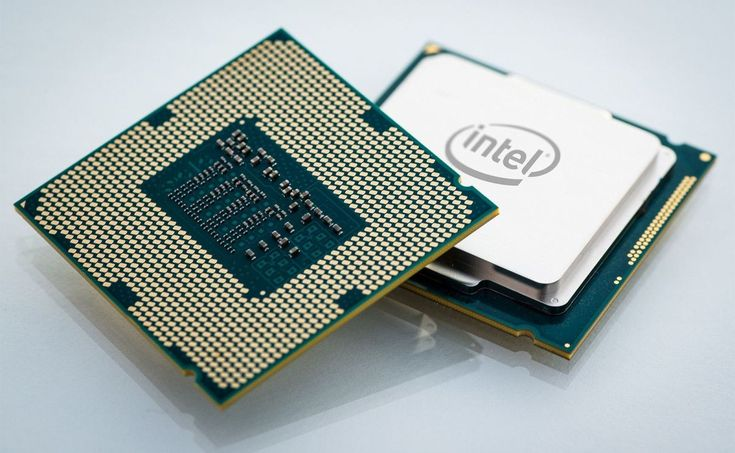
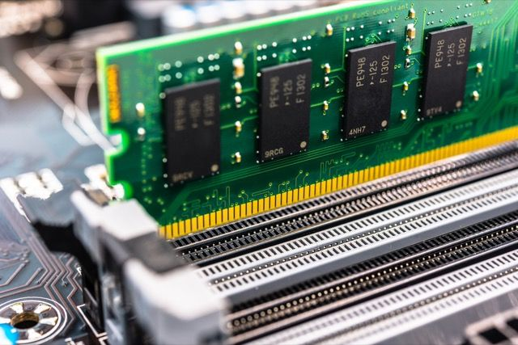
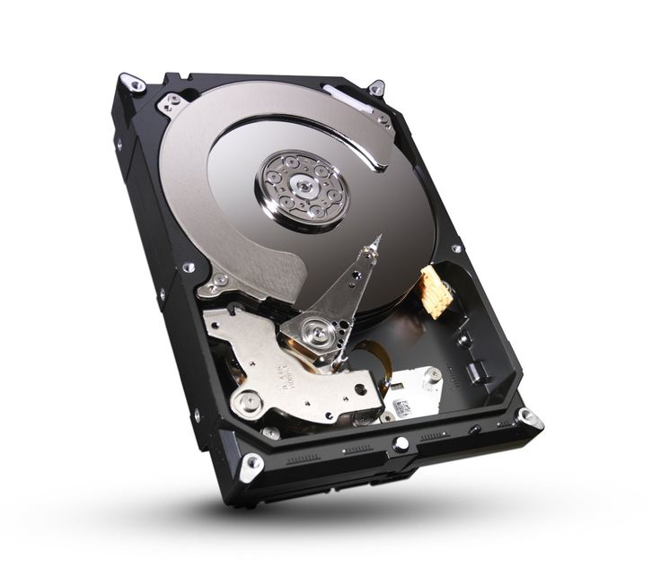
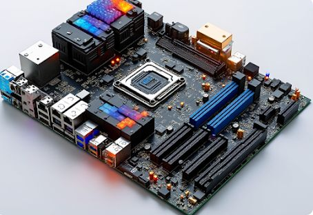
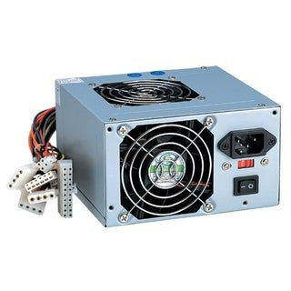
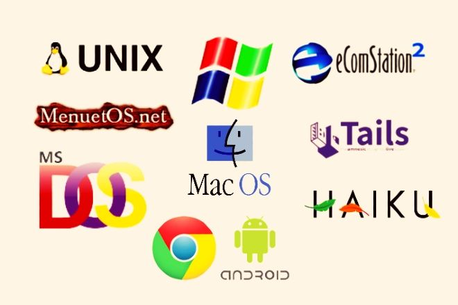
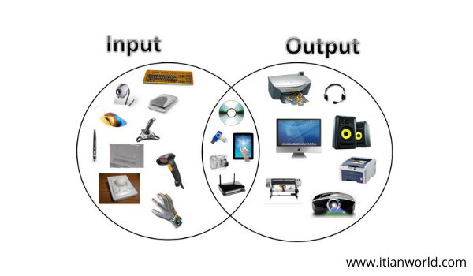

Introduction
System specification refers to the detailed description of a computer system’s hardware and software configuration. It helps users understand what a system is capable of and ensures compatibility between components.
Key Specification Components
-

Processor (CPU): Executes instructions and manages tasks. A faster CPU increases system performance.
-

Memory (RAM): Stores data temporarily for active processes. Crucial for smooth multitasking.
-

Storage: SSDs offer faster data access than HDDs. Storage capacity affects how much data and applications you can save.
-

Motherboard: The central platform connecting all parts of a computer system, including RAM, CPU, and GPU.
-
 Graphics Card (GPU): Handles visual processing. High-performance GPUs are essential for gaming and 3D rendering.
Graphics Card (GPU): Handles visual processing. High-performance GPUs are essential for gaming and 3D rendering.
-

Power Supply Unit (PSU): Supplies stable electrical power to all components based on system requirements.
-

Operating System: Manages hardware and software. Common systems include Windows, macOS, and Linux.
-

Input/Output Devices: Includes mouse, keyboard, monitor, printer, and more for interacting with the system.
Ports and Connectivity
- USB: Used for connecting peripherals like flash drives, keyboards, and game controllers.
- HDMI/DisplayPort: Delivers high-definition video and audio to external displays.
- Ethernet: For wired internet access with high reliability and speed.
- Audio Jack: Connects headphones, microphones, and speakers.
- Wi-Fi/Bluetooth: Enables wireless communication with networks and devices.
Safety and Maintenance Tips
- Use a surge protector to avoid power damage.
- Regularly clean components to prevent overheating.
- Ensure good airflow in your case for cooling.
- Update drivers and software for optimal performance.
- Never open a computer while it’s powered on or plugged in.
Purpose-Based System Recommendations
- Basic Office Work: Dual-core CPU, 4–8GB RAM, 128–256GB SSD.
- Graphic Design: Quad-core CPU, 16GB RAM, 512GB SSD, dedicated GPU.
- Gaming: High-end CPU, 16–32GB RAM, 1TB SSD/HDD combo, RTX/AMD GPU.
- Server Hosting: Multi-core CPU, ECC RAM, redundant power supply, RAID storage.